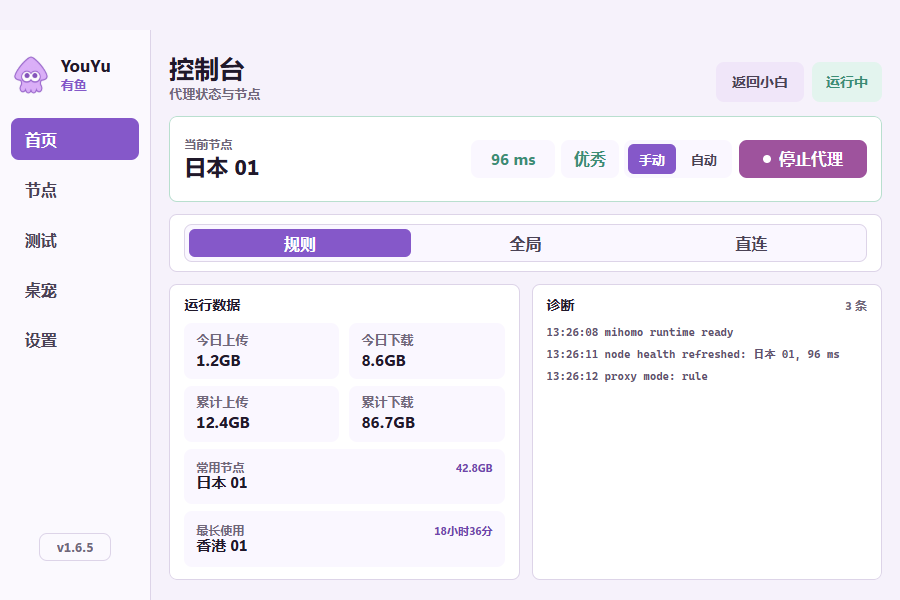
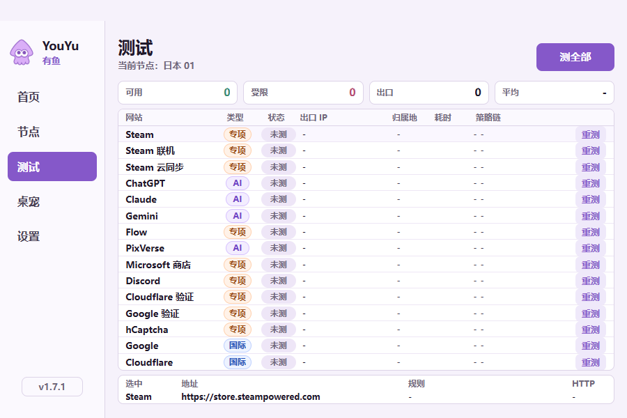

代理与节点
支持规则、全局和直连模式，可手动选节点、单节点测速或全部测速。
Windows x64 · Mihomo
YouYu 是一款 Windows Mihomo 桌面客户端。日常使用可以一键启停代理，需要时也能管理节点、测速、TUN、连通性测试和网络修复。
YouYu is a Mihomo desktop client for Windows x64, built with Electron and TypeScript.
公开安装包不内置订阅，仅支持 Windows x64。

核心功能
支持规则、全局和直连模式，可手动选节点、单节点测速或全部测速。
集中查看实时流量、节点健康、出口信息和常用服务的连通性。
清理代理残留、WinHTTP 代理和 DNS 缓存，处理常见的断网状态。
标准版、内部通道版与无桌宠版分别更新，避免跨通道安装。
界面预览

开始使用
从 GitHub Release 下载 Windows x64 安装包。
完成使用登记，在设置页保存订阅地址。
一键启动；需要调整时进入专业模式。
常见问题
YouYu 是面向 Windows x64 的 Mihomo 桌面客户端，提供代理管理、节点测速、连通性测试、网络修复、自动更新和桌宠。
请从 GitHub Releases 下载最新版。
不带。公开 Release 中的安装包均使用空的默认订阅。
可以。Release 同时提供无桌宠通道，文件名带有 -no。
GitHub Release
选择标准版或无桌宠版，安装后填写自己的订阅。